China Employee Termination in 2026: Pulse Signal Bulletin Brief for Foreign Employers
Key takeaways
- Foreign employers should run China termination operations as a live signal feed, not a static checklist.
- The highest-impact signals are route contradiction, payroll version conflict, script mismatch, and closure retrieval failure.
- Signal-based governance shortens response time and reduces costly late-stage reversals.
- The practical sequence remains: stabilize route and payroll first, then communication, then closure proof.
- This Pulse-style briefing is impact-first; legal depth is in the appendix.
Why this format now
Teams often have controls but miss timing. Signals appear, but nobody translates them into immediate decisions. A signal bulletin format fixes that gap by ranking risk signals and linking each to a direct action.
This run rotates to a priority signal bulletin so foreign operators can triage quickly during live weekly reviews.
Plain-language legal context first
China termination outcomes rely on consistency across legal route, factual record, payout/tax treatment, and communication behavior. If one layer changes without synchronized updates, exposure increases.
National legal rules are the baseline, but city-level implementation differences can materially affect dispute outcomes. Signal reviews should include locality-aware interpretation notes.
Priority signal feed (today’s operating lens)
Signal 1 (Critical): Route contradiction near communication window
What it means: core assumptions and latest facts are no longer aligned.
Immediate action: pause downstream activity, refresh route memo, resolve contradiction, revalidate locality note.
Owner: legal lead.
Signal 2 (Critical): Multiple active payroll worksheets
What it means: payout baseline is unstable and tax assumptions may conflict.
Immediate action: invalidate non-master versions, assign single owner, relock vFinal worksheet with IIT memo.
Owner: payroll lead.
Signal 3 (High): Script pack not linked to latest route + worksheet
What it means: communication can become evidentiary liability.
Immediate action: freeze outreach, refresh script version linkage, re-brief manager.
Owner: HR/comms lead.
Signal 4 (High): Blocker aging >48h in route/payroll stage
What it means: unresolved issues are likely to become forced decisions under pressure.
Immediate action: escalate to executive owner and assign dated remediation plan.
Owner: ops/PMO.
Signal 5 (Medium): Closure marked complete without retrieval test
What it means: post-case defensibility may fail under challenge.
Immediate action: reopen closure and complete retrieval validation.
Owner: closure owner.
Signal-to-action rulebook
- Critical signal: immediate hold, same-day owner assignment, update within 24h.
- High signal: controlled hold or conditional proceed with documented mitigations.
- Medium signal: fix within SLA and track recurrence.
No unresolved critical signal should coexist with employee-facing communication.
Practical foreign-client scenarios
Scenario A: HQ asks for same-week completion
Signals 1 and 2 appear in parallel.
Best response: hold and stabilize route + payroll before any communication decision.
Scenario B: regional team says “everything is ready”
Signal 3 reveals script version drift.
Best response: immediate communication freeze and script relink.
Scenario C: post-close governance audit
Signal 5 reveals missing retrieval evidence.
Best response: closure remediation sprint and archive reindex.
Weekly bulletin template for operators
- Top 5 active signals (ranked)
- Affected cases and owners
- Action status and deadlines
- Escalations and exception requests
- Repeat-signal trend since last week
This keeps updates concise and decision-focused.
7-day signal stabilization sprint
Day 1: publish signal inventory across active cases.
Day 2: clear all critical payroll/route conflicts.
Day 3: enforce script linkage checks pre-communication.
Day 4: escalate blockers older than 48h.
Day 5: run closure retrieval tests.
Day 6: measure signal recurrence and unresolved count.
Day 7: issue executive recap with next-cycle priorities.
KPI pack (signal health)
- Critical signal count
- Signal aging >48h
- Repeat-signal rate
- Post-communication correction rate
- Retrieval-test pass rate
14-day signal hardening roadmap
Days 1-3: baseline all active cases against the five-signal feed and identify top recurring signal family.
Days 4-6: enforce lock discipline on route and payroll signals, including single-owner accountability.
Days 7-9: deploy script-to-worksheet linkage checks and manager re-brief controls.
Days 10-12: clear aged blockers and close exception requests with explicit expiry checks.
Days 13-14: run closure retrieval validation and publish before/after signal trend deltas.
Signal ownership matrix (practical)
- Legal: Signal 1 ownership + locality interpretation refresh.
- Payroll: Signal 2 ownership + worksheet governance + IIT memo integrity.
- HR/Comms: Signal 3 ownership + script refresh + briefing evidence.
- PMO/Ops: Signal 4 ownership + aging escalation + dependency discipline.
- Closure/Compliance: Signal 5 ownership + archive index + retrieval proof.
Fast triage questions for weekly calls
- Which critical signal remained open longest this week?
- Which signal repeated in the same case after a “fix”?
- Did any exception bypass outlive its expiry?
- Which owner needs escalation support to clear blockers?
These four questions keep review calls short and action-focused.
Signal lifecycle SOP (detect -> contain -> resolve)
Detect
- identify signal source (route, payroll, comms, closure)
- timestamp first detection
- assign single owner within same working block
Contain
- apply hold rules for critical/high signals
- freeze downstream actions while core signal remains unresolved
- notify cross-functional stakeholders with one consistent status note
Resolve
- complete artifact-level fix (memo, worksheet, script, or archive)
- validate that linked dependencies are refreshed
- close signal with evidence and owner sign-off
This lifecycle prevents “paper closure” without operational closure.
Artifact checklist by signal type
- Signal 1: updated route memo + contradiction closure note + locality validation
- Signal 2: superseded worksheet cancellation record + vFinal worksheet + IIT assumption note
- Signal 3: refreshed script pack + briefing confirmation + escalation script
- Signal 4: blocker root-cause note + escalation owner + revised deadline
- Signal 5: closure memo + index map + retrieval test log
Exception controls
When a team seeks to proceed with unresolved high/critical signals, require:
- named risk owner
- compensating control
- expiry timestamp
- executive sign-off
No open-ended exceptions.
What to watch next
- Whether payroll conflicts remain top critical signal.
- Whether script mismatch recurrence drops after linkage enforcement.
- Whether closure retrieval pass rate rises after stricter close gating.
FAQ
1) Why signals instead of full case narratives?
Signals accelerate decision-making under time pressure.
2) Can high signals be tolerated?
Only with explicit mitigation and deadline ownership.
3) What should always trigger a hold?
Route contradiction, worksheet conflict, or script mismatch.
4) Is this legal advice?
No. It is operational governance guidance.
5) How often should bulletins run?
At least weekly, and daily during high-volume cycles.
6) What shows improvement first?
Lower critical-signal count and fewer post-communication corrections.
Legal depth appendix (secondary)
This brief is anchored in the PRC Labor Contract Law baseline and supplemented by practitioner and payroll references used by multinational employers. It is informational and not legal/tax advice. High-impact decisions should be validated with qualified local advisors.
Soft CTA
If your team needs compliance-first support for China employee termination, China-Payroll.com can help implement signal-based governance, payroll lock controls, and defensible closure workflows.
Disclaimer
This content is informational only and does not constitute legal, tax, or employment advice.
Sources
- National People’s Congress of China, Labor Contract Law of the PRC (English), accessed 2026-03-07: http://www.npc.gov.cn/zgrdw/englishnpc/Law/2007-12/13/content_1384064.htm
- ICLG, Employment & Labour Laws and Regulations: China, accessed 2026-03-07: https://iclg.com/practice-areas/employment-and-labour-laws-and-regulations/china
- Littler, Key Recent Developments in China’s Employment Law, accessed 2026-03-07: https://www.littler.com/news-analysis/asap/key-recent-developments-chinas-employment-law-china-us-comparative-perspective
- PwC Tax Summaries, China Individual — Taxes on Personal Income, accessed 2026-03-07: https://taxsummaries.pwc.com/peoples-republic-of-china/individual/taxes-on-personal-income
- China Briefing, China Human Resources and Payroll Guide, accessed 2026-03-07: https://www.china-briefing.com/doing-business-guide/china/human-resources-and-payroll
Need local employment support in China?
If you need a compliance-first partner for hiring, payroll, and risk controls in China, China-Payroll.com can help evaluate the right setup.
Image Prompt Pack
Create a 16:9 hero image for article title: 'China Employee Termination in 2026: Pulse Signal Bulletin Brief for Foreign Employers'. Scene: global operations team evaluating workforce model options for China market entry. Include motifs: decision matrix, org c…